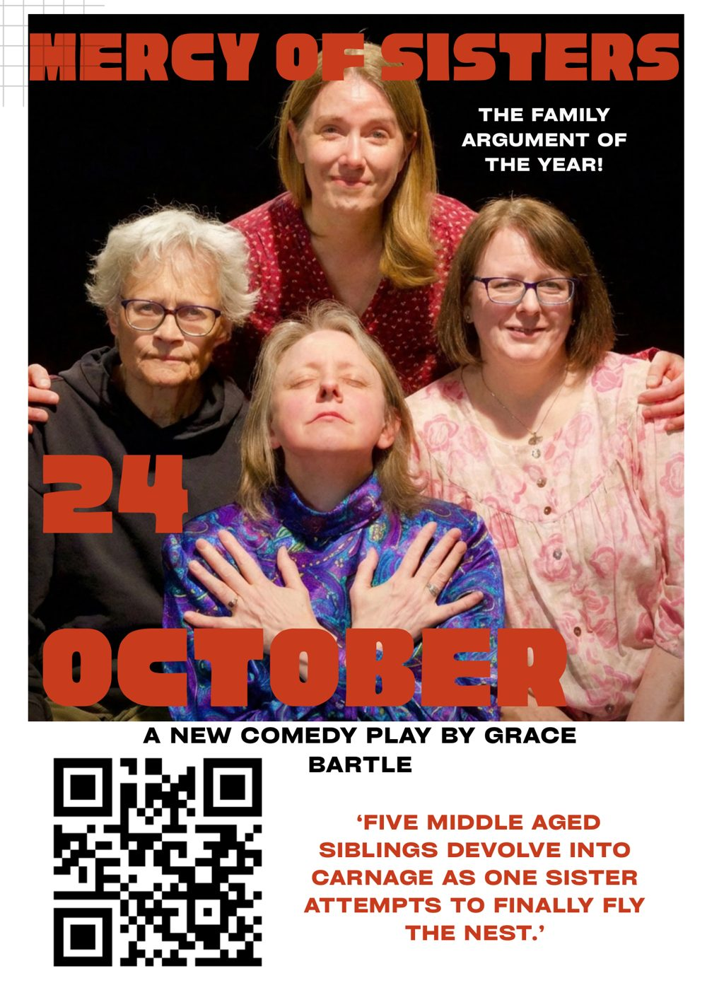
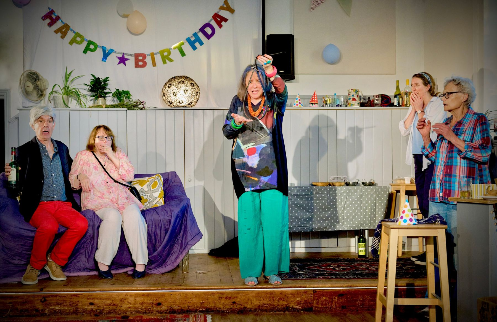

A new comedy
Mercy of Sisters
Five middle-aged siblings devolve into carnage as one sister attempts to finally fly the nest.
This brand new comedy is set around Floss's 50th birthday party, where she poses a simple request to her siblings… or so she thought. After all, she has been the sole carer for their ill mother for twenty-five years, so it's fair enough she wants to get away, right? Between the rock of resentment and the hard place of intergenerational trauma, this might not be the renaissance Floss was dreaming of. Chuck in exploding secrets and illicit affairs and you might just have the family argument of the year.
- Writer and director
- Grace Bartle Keenan
- Funded by
- Nicholas Hooper, composer


“A strong, swift plot… an all-too-recognisably charmless, dysfunctional, mad family world.”
“A delight from beginning to end.”
Performances
- 25–27 June 2026 The Hub, Combe, Oxfordshire Three nights
- 24 October 2026 Pegasus Theatre, Oxford Coming up 7.30pm